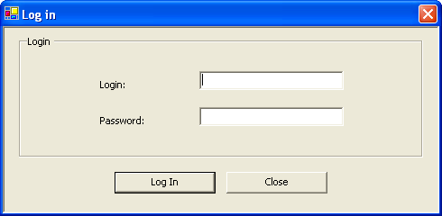
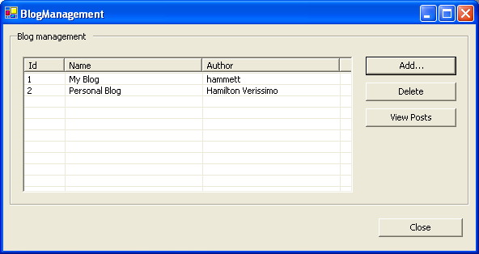
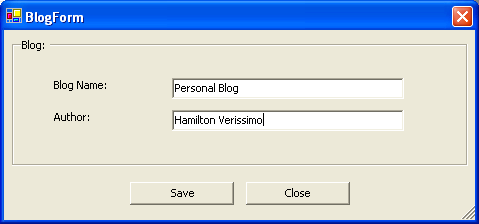

Table of contents
- 1 Creating the first user
- 2 The login form
- 3 The blog management
- 4 The posts management
Using the classes
You are now acquainted with most parts of ActiveRecord. We just need to start using the classes we have created. You will note that it couldn't get more natural.
Creating the first user
Our application has a login form. You must inform a correct login and password in order to get access to the rest of the application. But the database was just created. What about adding the first user?
The following code creates an user, it should be added to the main class just below the initialization.
User user = new User("admin", "123"); user.Create();
What if you run the application multiples times? A good solution would be to create the user only if no user is found on the database. We could count the existing users and if it is zero, we create the admin:
if (User.GetUsersCount() == 0) { User user = new User("admin", "123"); user.Create(); }
Obviously we need to add the method GetUsersCount to the User class:
[ActiveRecord("[User]")] public class User : ActiveRecordBase<User> { ... public static int GetUsersCount() { return Count(); } }
The login form
This window ask for a login:

The code is very simple, and makes uses of a search method that so far does not exists:
private void logInButton_Click(object sender, System.EventArgs e) { User user = User.FindByUserName(loginText.Text); if (user == null) { MessageBox.Show(this, "User not found", "Error", MessageBoxButtons.OK, MessageBoxIcon.Error); return; } if (user.Password != passwordText.Text) { MessageBox.Show(this, "Wrong password", "Error", MessageBoxButtons.OK, MessageBoxIcon.Error); return; } DialogResult = DialogResult.OK; Hide(); }
To make this work we need to include the method FindByUserName. As usual it is not difficult at all:
using NHibernate.Criterion; [ActiveRecord("[User]")] public class User : ActiveRecordBase<User> { ... public static User FindByUserName(string userName) { // Note that we use the property name, _not_ the column name return FindOne(Expression.Eq("Username", userName)); } }
The blog management
This window allows one to add, edit and delete a blog. It also brings another window to manage the posts that belongs to the selected blog.

When you click Add... or select an existing blog, another window will show.

To populate the blog list we select all existing blogs:
private void PopulateBlogList() { blogsList.Items.Clear(); foreach(Blog blog in Blog.FindAll()) { ListViewItem item = blogsList.Items.Add(blog.Id.ToString()); item.Tag = blog; item.SubItems.Add(blog.Name); item.SubItems.Add(blog.Author); } }
To create a new blog on the database all we need to do is
Blog blog = new Blog(); blog.Name = "My blog"; blog.Author = "hammett"; blog.Create();
Suppose that you don't have an blog instance, but you know the id. Let's change a blog instance then:
Blog blog = Blog.Find(100); // Id that we know exists blog.Name = "Different name"; blog.Author = "Different author"; blog.Update();
To remove an instance, just call the Delete method.
The posts management
With the posts we just cannot forget to relate the blog instance with the post we are creating:
currentPost.Blog = parentBlog; currentPost.Title = titleText.Text; currentPost.Contents = contentsText.Text; currentPost.Category = categoryText.Text; currentPost.Created = createdDtTime.Value; currentPost.Published = publishedCheck.Checked; currentPost.Save();
Proceed with Getting more.
Found an error? Something inaccurate? Help us improve the documentation
Generated by Castle Anakia.
Sponsored by  Castle Stronghold.
Castle Stronghold.